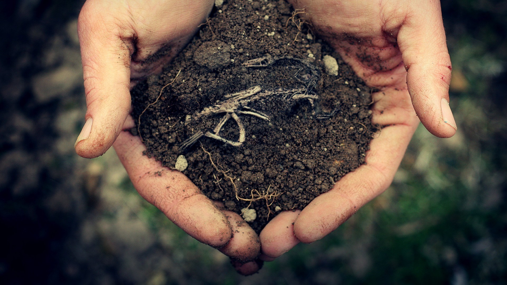
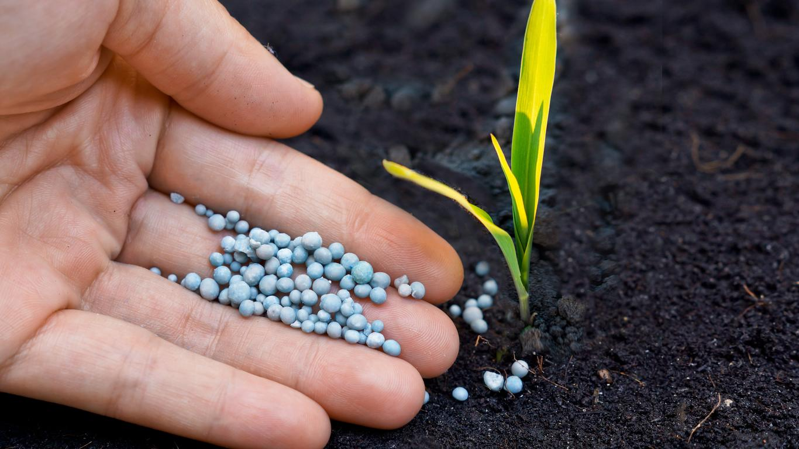
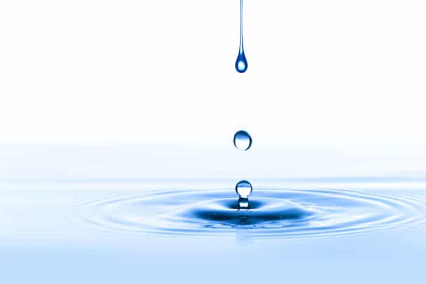

कृषी प्रयोगशाळा
नवीन वय प्रयोगशाळे ग्राहकांचे उत्पादन वाढविण्याच्या उद्देशाने बियाणे ते कापणी या प्रत्येक गोष्टीवर कृषी प्रयोगशाळेची चाचणी देतात. घरामागील अंगणातील गार्डनर्सपासून ते कुटूंब शेतात व्यापारी शेतकर्यांपर्यंत, एनएएल पशुधन कचरा, धान्य, फळे, उत्पादन, दुग्धशाळा, द्राक्षमळे, कुक्कुटपालन, पाणी, माती आणि ऊतींचे परीक्षण करते.
नैwत्य मिशिगन अॅग्रीकल्चर अलायन्सचे संस्थापक सदस्य म्हणून आम्ही मिडवेस्ट आणि त्यापलीकडे कृषी उद्योग अधिक सुदृढ करण्यासाठी वचनबद्ध आहोत. चांगली कृषी पद्धती (जीएपी) एनएएलच्या कृषी प्रयोगशाळेच्या चाचणी सेवांच्या केंद्रस्थानी आहेत.

का आम्ही चाचणी
माती

माती विश्लेषणाचे प्रमुख उद्दीष्ट म्हणजे जमिनीतील पोषक साठे आणि रासायनिक रचनांची यादी करणे. अत्यावश्यक घटकांमधील असंतुलन पिकाच्या उत्पादनास मर्यादित करू शकत असल्याने, जास्तीत जास्त आर्थिक उत्पादन देण्याकरिता पोषणद्रव्ये व्यतिरिक्त काय न्याय्य आहे हे ठरवण्यासाठी ही माहिती आवश्यक आहे. चुना आणि खतांचा पोषक घटक आर्थिक आणि पर्यावरणीयदृष्ट्या जबाबदार अशा दोन्ही प्रकारे लागू केला जातो हे सुनिश्चित करण्याचा माती विश्लेषण हा एक चांगला मार्ग आहे.
रसायनशास्त्र आणि संशोधनाद्वारे समर्थित, मातीचे विश्लेषण हा खर्च नियंत्रित करण्यासाठी, जास्तीत जास्त उत्पन्न मिळवून देण्यासाठी आणि पर्यावरणाचे रक्षण करण्यासाठी प्रत्येक निर्मात्याच्या शस्त्रास्त्रांचा एक भाग असावा.
माती पीएच मातीच्या सुपीकतेवर परिणाम करणारा सर्वात महत्वाचा घटक आहे. मातीची पीएच तटस्थ (पीएच 6.5 ते 6.8) च्या खाली पातळीवर राखली जाते तेव्हा वनस्पतींचे पोषकद्रव्ये सर्वाधिक उपलब्ध असतात. ग्राउंड शेती चुनखडीचा वापर मातीचा पीएच एक वांछनीय स्तरापर्यंत वाढविण्यासाठी केला जाऊ शकतो.
खते

खते कच्चा माल उत्पादक, वितरक, विक्रेते आणि उत्पादकांना हे जाणून घेण्यात स्वारस्य आहे की त्यांनी हाताळलेली उत्पादने दर्जेदार आणि सामग्रीच्या तपशीलांची पूर्तता करतात. आपण बनवित असलेले, खरेदी केलेले किंवा विक्री केलेले उत्पादन गुणवत्ता आणि सामग्री तपशीलांची पूर्तता करते याची खात्री करण्याचा एकमेव मार्ग म्हणजे प्रयोगशाळेद्वारे त्याची चाचणी घेणे.
वनस्पती ऊतक

वनस्पतींचे ऊतक विश्लेषण हे निदान करण्याचे साधन आहे जे बर्याच वर्षांपासून वापरले जात आहे. हे एका संकल्पनेवर आधारित आहे की एका विशिष्ट गंभीर बिंदूपर्यंत वनस्पतींच्या ऊतींमधील पोषक घटकांचा थेट उत्पन्नाशी संबंध असतो. आणि, वनस्पतींमधील पोषकद्रव्ये थेट उपलब्ध असलेल्या मातीतील पौष्टिकतेच्या प्रमाणाशी किंवा थेट काही प्रमाणात वनस्पतीपुरती मर्यादित आहेत. म्हणूनच, वनस्पती ऊतींचे विश्लेषण आणि मातीची चाचणी एकत्र काम करत आहेत.
कंपोस्ट आणि खत

कंपोस्टचा वापर बागायती क्षेत्रात मोठ्या प्रमाणात केला जातो आणि यामुळे मातीची रचना सुधारते आणि मातीची पोषक सामग्री समृद्ध होते. परिणामी कंपोस्टिंगमध्ये रस वाढत आहे.
खत हे एक मौल्यवान संसाधन आहे जे मातीची रचना सुधारण्यासाठी व्यावसायिक खतांची आणि सेंद्रिय पदार्थाची आवश्यकता विस्थापित करण्यासाठी आवश्यक पीक पोषक पुरवठा करू शकते. खताचा पुरेसा वापर केल्यास तुमची उत्पादन खर्च मोठ्या प्रमाणात कमी होईल आणि आमच्या वातावरणाचे रक्षण होईल. खत म्हणून पशुधन स्रोतांकडून मातीच्या दुरुस्त्यांचा सुरक्षित उपयोग अन्न सुरक्षा आधुनिकीकरण अधिनियम (एफएसएमए) अंतर्गत वापरल्या जाणार्या विशिष्ट सुरक्षा खबरदारीची आवश्यकता आहे.
पाणी

इतर कोणत्याही पोषक द्रव्यापेक्षा जास्त प्रमाणात पाण्याचे सेवन केले जाते. पाण्याचे एक व्यापक विश्लेषण घरगुती, सिंचन किंवा पशुधनाच्या वापरासाठी योग्य पाणी पुरवठा दर्शविते. जीएपी आणि एफएसएमएला विश्लेषणात्मक सत्यापित पिण्यायोग्य पाण्याचा वापर आवश्यक आहे. आपल्या शेतात वापरल्या जाणार्या सूक्ष्मजीव पाण्याच्या गुणवत्तेचे मूल्यांकन करणे आणि त्याचे दस्तऐवजीकरण करणे ही सुरक्षित कृषी उत्पादने उपलब्ध करण्यासाठी आवश्यक आहे.
आपल्या घरात पाण्याची गुणवत्ता असो की शाळा, व्यवसाय, आवडत्या जलतरण भोक किंवा शेतात जीवाणूंचा धोका असू शकतो हे जाणून घेणे योग्य ठरेल.
पर्यावरणविषयक
नवीन वय प्रयोगशाळांमध्ये पर्यावरणीय विश्लेषणात्मक चाचणी सेवांची संपूर्ण श्रेणी प्रदान केली जाते, जसे की माती, गाळ, पाणी, लीचेट्स, धूळ आणि हवेचे विश्लेषण. उपरोक्त मॅट्रिकसाठी प्रदान केलेल्या विश्लेषणात्मक सेवांच्या श्रेणीमध्ये रूटीन, ट्रेस आणि अल्ट्रा-ट्रेस लेव्हल ऑर्गेनिक्स (अस्थिर, अर्ध वाष्पशील, कीटकनाशके, पीसीबी, हर्बिसाइड्स) आणि धातूंचा समावेश आहे. विश्लेषण पद्धती अमेरिकेच्या पर्यावरण संरक्षण एजन्सीद्वारे प्रकाशित केलेल्या सुप्रसिद्ध आणि आंतरराष्ट्रीय स्तरावर मान्यताप्राप्त प्रक्रियेवर आधारित आहेत.
आम्ही काय चाचणी करतो, आम्ही कसे चाचणी करतो याबद्दल अधिक वाचा आणि आम्ही आपले शेती उत्पादन कसे वाढवू शकतो हे जाणून घेण्यासाठी आमच्याशी संपर्क साधा.
कृषी चाचणी आणि संशोधन सेवा
कॉन्ट्रॅक्ट प्रयोगशाळा आपल्या सर्व शेती चाचणी, विश्लेषण, वैज्ञानिक संशोधन आणि विकास, तपासणी, प्रमाणपत्र, अभियांत्रिकी, अपयशी तपासणी आणि उत्पादन विकासाच्या आवश्यकतांमध्ये यासह आपली मदत करू शकते:
1. वनस्पती विश्लेषण चाचणी
2. मृदा प्रजनन चाचणी
3. पोल्ट्री टेस्टिंग
4. दुध चाचणी
5. खत चाचणी
6. माती idityसिडिटी चाचणी
7. माती चाचणी
8. फीड चाचणी
9. कृषी वस्तू तपासणी चाचणी
10. फिशमेल चाचणी
कृषी व मृदा प्रयोगशाळेचा पत्ता व संपर्क क्रमांक
कुणालाही शेती व मातीसंदर्भात कोणत्याही प्रकारची माहिती हवी असल्यास खाली दिलेल्या पत्त्यावर आणि क्रमांकावर संपर्क साधू शकताः
1. राष्ट्रीय कृषी व अन्न विश्लेषण व संशोधन संस्था (नाफरी) पत्ता: १०१२, ए आर भट्ट पथ दादावाडी, शुक्रवार पेठ दुसरा व तिसरा मजला एमसीसीआयए बिल्डिंग, पुणे, महाराष्ट्र 10११०42२ फोनः 020 2444 0079.
2. सोना ticalनालिटिकल Researchण्ड रिसर्च लॅबोरेटरी सातारा पत्ता: मयुरेश्वर कॉलनी, रणमाला कालवा रस्ता, कूपर कॉलनी समोर, सदर बाजार, सातारा, महाराष्ट्र 415001
फोन: 086000 05096.
3. अरिहंत अॅग्रो-व्हेट प्रयोगशाळेचा पत्ता: वसंतदादा इंडस्ट्रियल इस्टेट, सांगली, महाराष्ट्र 416416.
4. सोल टेस्टिंग लॅब कोल्हापूर पत्ता: 330/2 बी, वाय. पी. नगर नगर, कोल्हापूर, महाराष्ट्र 416001.
5. एम.के. माती चाचणी प्रयोगशाळेचा पत्ता: भारती हाऊस, तळ मजला, समोर. ग्रँड भगवती हॉटेल, एन.आर. अवलोन हॉटेल आणि जाह्नवी बिंगलोज, ऑफ. एस.जी. हायवे रोड, बोडकदेव, मॅपल काउंटी आरडी, थलतेज, अहमदाबाद, गुजरात 380054 फोन: 079 2970 2174.
6.जिल्हा मृदा टीझिंग प्रयोगशाळा नाशिक पत्ता: मास्टर मॉल जवळ, गंजमाळ, नाशिक, महाराष्ट्र 200२२००१.
7. बियाणे चाचणी प्रयोगशाळेचा पत्ता: रवींद्र नाथ टागोर मार्ग, विज्ञान संस्थेच्या विरुद्ध, महाराजबाग स्क्वेअर, सिव्हिल लाइन्स, नागपूर, महाराष्ट्र 440001 फोन: 0712 256 4213.
8. नेक्सबीम ticalनालिटिकल लॅबोरेटरी पत्ता: 313, कोहिनूर सिटी सेंटर, राम अली रोड, रत्नागिरी, महाराष्ट्र 415612.
9. आरोगम प्रयोगशाळेचा पत्ता:,, स्वामी नारायण कॉम्प्लेक्स, साने गुरुजी गार्डन जवळ, चिंच नाका, चिपळूण, महाराष्ट्र 5१560०5.
10. जिल्हा माती सर्वेक्षण माती चाचणी प्रयोगशाळेचा पत्ता: विजापूर रोड, नवीन आरटीओ कार्यालय जवळ, कमला नगर, सोलापूर, महाराष्ट्र 413004 फोन: 0217 230 1126.
प्रमाणपत्रे आणि उपयुक्त दुवे विविध प्रकारची
📞 संपर्क साधा
वैशिष्ट्यीकृत पोस्ट

कृषी सुविधांमध्ये संपूर्ण होल्डिंगपासून ते आस्थापनांपर्यंतच्या सुविधांचा समावेश आहे.

खरंच, शतकानुशतकाच्या सर्वात मोठ्या शेतीच्या विस्ताराच्या शेवटी, शेतक of्याची कोंडी ही एक मोठी समस्या बनली होती.

शेतात, आयओटी शेतातील डिव्हाइसवर सर्व प्रकारचे डेटा दूरस्थपणे मोजण्याची आणि वास्तविक वेळेत ही माहिती शेतक to्यास पुरविण्याची परवानगी देते.

शेती हा भारताच्या अर्थव्यवस्थेचा उल्लेखनीय भाग आहे, कारण त्यामध्ये संपूर्ण जीडीपीच्या 18 टक्के वाढ होते.

आपल्याला जे करायला आवडते ते करा आणि आपल्याला स्मित करा.